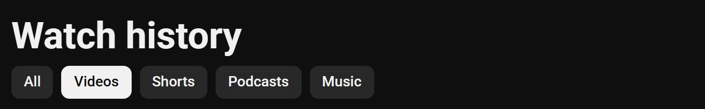

Guide 03·Watch history
How to export your YouTube watch history.
Updated 19 November 2026
Short answer
Google Takeout exports your whole YouTube watch history, with the date and time of every video, as a web page or a JSON file. It has no spreadsheet option. For a CSV that opens in Excel or Google Sheets, with each video's channel, length and the day you watched it, Needle, a free Chrome extension, exports your history straight from the History page, and leaves the Shorts out.
01·Takeout
Everything, with Google Takeout
- Go to takeout.google.com and press Deselect all.
- Tick YouTube and YouTube Music, open All YouTube data included, and leave only history ticked.
- For a JSON file instead of a web page, open Multiple formats and pick JSON for history.
- Create the export. Google emails you a link when it's ready, which for history on its own is often a few minutes.
You get watch-history.html, or watch-history.json: every video with its channel and the date and time you watched it, as far back as YouTube kept it. There's no length or view count, and no spreadsheet option.
Excel can open the JSON through Data, Get Data, From File, From JSON, though the channel sits a level down and needs unpacking. In a script it's a few lines.
02·With Needle
A spreadsheet, with Needle
- Open your History page at youtube.com/feed/history.
- Press the needle button in the bottom right corner, or Alt+Y.
- Press Read all to go back further than the first page.
- Filter it if you like, by channel, length or when you watched it, then Export, Download CSV.
The file is called watch-history.csv and opens straight into Excel or Google Sheets with a double-click.
03·The columns
What's in the file
- title, channel, videoId and url.
- durationSeconds, to add up, and duration as it's shown, like 12:34.
- views and published as YouTube showed them, with approxDaysAgo for the upload.
- watchedOn, the day you watched it, as a date that sorts, and watchedDaysAgo.
That answers things Takeout can't, like how many hours you watched last month: filter the panel to that month, export, and in Excel =SUM(E:E)/3600 is the total in hours. The same columns come out of any list: exporting a playlist has the details.
04·Shorts
Without the Shorts
On YouTube, the History page has chips across the top: All, Videos, Shorts, Podcasts and Music. Pick Videos and the shelves of Shorts go.

Needle's history panel leaves Shorts out by itself, and so its export does too. On the history checked for this guide, it read 160 videos, and none of them was one of the Shorts on the page.
05·Removing them
Removing Shorts from your history
There's no way to remove only the Shorts at once. Each Short on the History page has a ⋮ with Remove from watch history, one at a time. Picking the Shorts chip first puts them all together, which makes it quicker. Clear all watch history, in the column on the right, takes everything, videos as well.
Needle can't do this one for you. It reads your history and never changes it.
06·Sorting
Oldest first, and other orders
The History page always starts with today. In Needle's panel, Sort has Watched longest ago, which turns it round, along with views, length and upload date. With Read all, it's the way down to the oldest things YouTube still has for you.
Looking for one video rather than all of them? Find a video you watched long ago, or search your history by channel, length and date. And to keep Shorts off Home and search as well, hide Shorts on YouTube.
07·Questions
Questions?
Can you export YouTube watch history to CSV?
Not from Google: Takeout offers HTML or JSON. Needle's Download CSV, on the History page, gives a spreadsheet of what it has read. Excel can also open Takeout's JSON through Data, Get Data, From File, From JSON, with some unpacking.
How far back does Needle's export go?
As far as it has read: the first page of your history to start with. Press Read all in the panel, or turn on Deep reading, and it reads further back. For years of history in one go, Takeout is the one to use.
Does the export have the time I watched each video?
Needle's has the day, taken from the History page's own headings. Takeout's has the exact time.
How do I see my history without Shorts?
Pick the Videos chip at the top of the History page. Needle's history panel, and its export, leave Shorts out on their own.
How do I remove Shorts from my watch history?
One at a time: each Short on the History page has a ⋮ with Remove from watch history, and the Shorts chip lists them all together. YouTube has no way to remove only Shorts in one go, and Needle only reads your history, it never changes it.
Can I move my watch history to another account?
No. YouTube has no way to import history, so an export from Takeout or Needle is a record to keep and search, not something another account can load.
Is my history sent anywhere?
No. Needle has no server. It reads your history from youtube.com with your own sign-in, keeps it on your device, and the CSV is made in your browser.
Is it free?
Yes. No account, no trial, no paid tier.